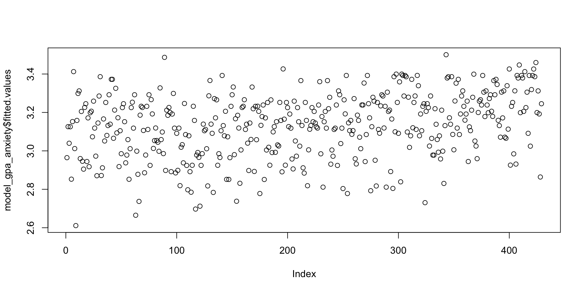
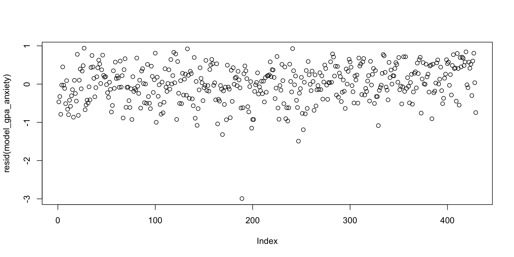

Stats Modeling in R: Week 1
Why Statistics in R?
Code you can reproduce and share!
Do you recall your analysis in SPSS?
SPSS
Why Statistics in R?
It’s free! You don’t need a subscription.
Linear Regression Considerations
- Continuous outcome (Y) with a relatively normal distribution
- We are modeling a linear relationship between X and Y (linear in the parameters)
- The residuals should be independent (no clustering!)
- The residual variance should be relatively equal (homoscedasticity)
Linear Regression in R
Today we’re going to use a dataset from Multilevel Modeling Using R by Finch and Bolin. You can access the Cassady data from www.mlminr.com.

Let’s read in a csv file
# A tibble: 4 × 30
Gender Male Minority Age GPA Verbal Math TotSAT SSH.total BStotal
<dbl> <dbl> <dbl> <dbl> <dbl> <dbl> <dbl> <dbl> <dbl> <dbl>
1 2 1 1 21 2.5 NA NA NA 20 14
2 1 0 1 20 2.2 NA NA NA 20 20
3 2 1 1 21 2.8 NA NA NA 18 23
4 2 1 1 22 2.25 NA NA NA 18 30
# ℹ 20 more variables: CTA.tot <dbl>, PTTtotal <dbl>, PTT.factor1 <dbl>,
# PTT.factor2 <dbl>, PTT.factor3 <dbl>, Perf.CM <dbl>, Perf.D <dbl>,
# Perf.PE <dbl>, Perf.PC <dbl>, Perf.PS <dbl>, Perf.O <dbl>,
# harvey.negproj <dbl>, harvey.achexp <dbl>, harvey.parinf <dbl>,
# harvey.org <dbl>, stoeberORG <dbl>, stoeberCMD <dbl>, stoeberPEC <dbl>,
# stoeberPS <dbl>, Harvey4f <dbl>Quick Look at the Data
Gender Male Minority Age
Min. :1.000 Min. :0.0000 Min. :0.0000 Min. :18.00
1st Qu.:1.000 1st Qu.:0.0000 1st Qu.:1.0000 1st Qu.:20.00
Median :1.000 Median :0.0000 Median :1.0000 Median :20.00
Mean :1.374 Mean :0.3745 Mean :0.9321 Mean :20.97
3rd Qu.:2.000 3rd Qu.:1.0000 3rd Qu.:1.0000 3rd Qu.:21.00
Max. :2.000 Max. :1.0000 Max. :1.0000 Max. :50.00
NA's :2
GPA Verbal Math TotSAT
Min. : 0.000 Min. :100.0 Min. :210.0 Min. : 600
1st Qu.: 2.800 1st Qu.:460.0 1st Qu.:487.5 1st Qu.: 970
Median : 3.100 Median :520.0 Median :540.0 Median :1055
Mean : 3.753 Mean :527.4 Mean :537.4 Mean :1069
3rd Qu.: 3.500 3rd Qu.:590.0 3rd Qu.:600.0 3rd Qu.:1160
Max. :302.000 Max. :800.0 Max. :780.0 Max. :1520
NA's :19 NA's :109 NA's :110 NA's :100
SSH.total BStotal CTA.tot PTTtotal
Min. : 8.00 Min. :10.00 Min. :17.00 Min. :27.00
1st Qu.:18.00 1st Qu.:11.00 1st Qu.:27.00 1st Qu.:41.00
Median :23.00 Median :13.00 Median :34.00 Median :48.00
Mean :21.95 Mean :15.88 Mean :35.14 Mean :48.65
3rd Qu.:25.00 3rd Qu.:20.00 3rd Qu.:43.00 3rd Qu.:56.00
Max. :32.00 Max. :40.00 Max. :68.00 Max. :81.00
NA's :13 NA's :13 NA's :27 NA's :21
PTT.factor1 PTT.factor2 PTT.factor3 Perf.CM
Min. :13.00 Min. : 5.00 Min. : 4.000 Min. : 9.00
1st Qu.:23.00 1st Qu.:10.00 1st Qu.: 5.000 1st Qu.:19.00
Median :27.00 Median :13.00 Median : 7.000 Median :23.00
Mean :27.39 Mean :13.34 Mean : 7.998 Mean :23.69
3rd Qu.:32.00 3rd Qu.:16.00 3rd Qu.:10.000 3rd Qu.:28.00
Max. :41.00 Max. :25.00 Max. :20.000 Max. :45.00
NA's :16 NA's :4 NA's :4 NA's :14
Perf.D Perf.PE Perf.PC Perf.PS
Min. : 4.00 Min. : 5.00 Min. : 4.000 Min. : 7.00
1st Qu.: 8.00 1st Qu.:13.00 1st Qu.: 6.000 1st Qu.:22.00
Median :11.00 Median :15.00 Median : 8.000 Median :25.00
Mean :10.92 Mean :15.29 Mean : 8.835 Mean :25.07
3rd Qu.:13.00 3rd Qu.:18.00 3rd Qu.:11.000 3rd Qu.:28.00
Max. :20.00 Max. :25.00 Max. :20.000 Max. :35.00
NA's :7 NA's :7 NA's :8 NA's :12
Perf.O harvey.negproj harvey.achexp harvey.parinf harvey.org
Min. : 6.00 Min. :12.00 Min. : 8.00 Min. : 9.0 Min. : 6.00
1st Qu.:22.00 1st Qu.:26.00 1st Qu.:25.00 1st Qu.:19.0 1st Qu.:22.00
Median :24.00 Median :31.00 Median :29.00 Median :23.0 Median :24.00
Mean :23.95 Mean :31.28 Mean :28.41 Mean :24.1 Mean :23.95
3rd Qu.:28.00 3rd Qu.:37.00 3rd Qu.:32.00 3rd Qu.:28.0 3rd Qu.:28.00
Max. :30.00 Max. :60.00 Max. :40.00 Max. :45.0 Max. :30.00
NA's :6 NA's :16 NA's :12 NA's :11 NA's :6
stoeberORG stoeberCMD stoeberPEC stoeberPS Harvey4f
Min. : 6.00 Min. :12.00 Min. : 9.0 Min. : 7.00 Min. :1.000
1st Qu.:22.00 1st Qu.:26.00 1st Qu.:19.0 1st Qu.:21.00 1st Qu.:2.000
Median :24.00 Median :31.00 Median :23.0 Median :25.00 Median :2.000
Mean :23.95 Mean :31.28 Mean :24.1 Mean :24.58 Mean :2.474
3rd Qu.:28.00 3rd Qu.:37.00 3rd Qu.:28.0 3rd Qu.:28.00 3rd Qu.:3.000
Max. :30.00 Max. :60.00 Max. :45.0 Max. :35.00 Max. :4.000
NA's :6 NA's :16 NA's :11 NA's :12 NA's :30 Outcome Variable
Our outcome variable is GPA. This is what we want to model. Let’s take a quick look at the distribution.
Linear Regression
Is there a relationship between physical (BStotal) and cognitive academic anxiety (CTA.tot) and GPA?
Let’s run a few quick correlation coefficients (standardized covariation).
There are several ways to run correlations in R. Base R has the cor() function. The default method is Pearson’s Correlation Coefficient.
Linear Regression
Let’s look at the relationship between cognitive academic anxiety and GPA.
What’s wrong with this scatterplot?

Linear Regression
A quick change to the range of the y-axis and you can see the relationship between variables.

Linear Regression
Let’s look at the relationshp between physical anxiety and GPA.
Thinking about Outliers
Who is this wacky outlier that keeps showing up in my plots?
Thinking about Outliers
Who is this wacky outlier that keeps showing up in my plots?
Linear Regression in R
How do we write a regression formula in R?
Linear Regression in R
Is there a relationship between physical (BStotal) and cognitive academic anxiety (CTA.tot) and GPA?
Linear Regression in R
What does this all mean?
Call:
lm(formula = GPA ~ CTA.tot + BStotal, data = students)
Residuals:
Min 1Q Median 3Q Max
-2.99239 -0.29138 0.01516 0.36849 0.93941
Coefficients:
Estimate Std. Error t value Pr(>|t|)
(Intercept) 3.618924 0.079305 45.633 < 2e-16 ***
CTA.tot -0.020068 0.003065 -6.547 1.69e-10 ***
BStotal 0.013469 0.005077 2.653 0.00828 **
---
Signif. codes: 0 '***' 0.001 '**' 0.01 '*' 0.05 '.' 0.1 ' ' 1
Residual standard error: 0.4852 on 426 degrees of freedom
(57 observations deleted due to missingness)
Multiple R-squared: 0.1066, Adjusted R-squared: 0.1024
F-statistic: 25.43 on 2 and 426 DF, p-value: 3.706e-11Breaking Down the Variance
Obtaining Confidence Intervals
Reviewing the coefficients
Confidence Intervals Function
Predicted Outcomes
Can I grab the predicted individual GPAs from the model? Yes you can.
1 3 4 5 8 9 10 11
2.964641 3.125996 3.039668 3.125454 2.852730 3.152391 3.412460 3.011917
12 13 14 15 16 17 19 23
2.611103 3.158448 3.298923 3.312121 2.959938 3.205183 2.945928 2.904979
25 26 27 28 29 30 31 34
3.226064 3.245318 2.944573 3.171646 2.917635 3.198584 3.206267 3.073204
35 37 38 39 41 42 43 44
3.258787 3.118584 2.972594 2.870630 3.144980 3.285454 3.386064 2.871713
45 46 48 50 51 52 53 54
2.911849 3.166131 3.051511 3.251917 3.080345 3.131782 3.292053 3.138923
55 56 57 58 59 60 61 62
3.372324 3.372324 3.065521 3.212324 3.325590 3.093543 3.172459 2.918177
63 65 66 67 68 69 70 71
3.104844 2.985250 3.225251 3.245318 3.151849 2.937703 2.978109 3.058651
72 73 74 75 76 77 79 80
2.852188 3.011375 3.225251 3.253272 3.118313 3.292053 2.664979 2.998448
81 83 84 86 87 88 89 90
2.878041 2.737025 3.185928 3.232121 3.225793 3.106199 2.885995 2.978380
91 92 93 94 95 96 97 99
3.231850 3.111443 3.292053 2.924505 3.266741 3.192256 3.012730 3.053407
100 101 102 103 104 106 107 108
3.119126 3.053949 3.044912 2.997906 3.327757 3.058651 3.098245 2.985792
109 111 112 113 114 117 118 119
3.486674 2.898109 3.211782 3.185115 3.225793 3.199939 2.891781 3.191714
120 121 122 123 124 125 126 127
3.298923 3.118313 2.885453 3.091375 2.898651 3.118313 2.818922 3.019058
128 129 130 131 132 133 134 135
3.032256 2.937703 3.246673 3.084776 2.924234 2.797499 3.078448 2.891781
136 137 138 139 140 141 142 143
2.784843 2.925047 3.232121 3.158448 2.697160 2.978109 2.991578 2.965995
144 145 147 148 149 150 151 152
2.712255 2.924505 2.985521 3.139194 3.104844 3.111443 3.011104 2.817567
153 155 156 158 161 162 163 164
3.286538 3.366267 3.139194 3.091375 2.783759 3.271985 3.171917 3.265657
165 166 167 168 169 171 172 174
2.925047 2.985250 2.965453 3.104844 3.392392 3.131511 3.078448 3.205996
175 176 177 178 179 180 181 182
2.851646 3.073204 2.851375 2.964641 3.231850 3.292053 3.332460 2.980277
183 185 186 187 188 189 190 191
3.167215 2.737838 3.185115 3.118855 2.831307 3.004776 3.225793 3.231850
192 193 195 196 197 198 199 200
3.266199 3.111443 3.138652 3.040210 2.897838 3.144980 3.059464 3.332189
202 203 204 205 207 209 210 213
3.219194 2.892865 3.231850 3.058110 3.232392 3.205725 2.777973 3.132866
214 215 216 217 218 219 220 221
3.178516 3.238720 2.851104 3.171646 3.004505 3.251917 3.018787 2.925318
222 223 224 225 226 227 228 229
3.265386 2.991307 3.098787 3.126267 2.992391 3.151849 3.031172 3.025386
230 231 232 233 234 235 236 237
3.252188 3.158448 2.890968 3.426470 3.165047 2.925589 3.251917 3.225251
238 239 240 241 242 243 244 245
3.126267 3.191714 3.118313 2.957771 2.906063 3.258787 3.051511 2.972323
246 247 248 250 251 252 253 254
3.225251 3.151579 3.024573 3.365725 3.132053 2.911849 2.884369 3.252188
255 257 258 259 260 261 262 263
3.158448 2.818651 3.005318 3.112527 3.131782 3.225251 3.151579 3.205183
264 265 266 267 268 269 270 271
3.144980 3.125454 3.118584 3.238720 3.360210 2.984708 3.178787 2.811239
272 273 274 275 276 277 279 280
3.151579 3.205183 3.118313 3.365725 3.219465 3.278855 2.930833 3.004505
281 282 283 286 287 289 290 291
2.972052 3.111443 3.118313 3.238720 2.924234 3.312121 3.292053 3.038042
292 293 294 295 296 297 298 299
3.118313 2.803827 3.265657 3.192527 3.392392 2.777973 3.145792 3.105386
300 301 302 303 304 305 306 307
3.158448 3.086131 3.105386 3.271985 2.958854 2.931917 3.185928 3.158719
308 309 310 311 312 313 315 316
3.071307 3.011375 3.238991 3.238720 3.353069 2.944302 3.085047 3.392392
317 318 319 320 321 323 324 325
3.245589 3.171917 2.792526 3.125725 3.278855 3.259058 2.951172 2.817296
326 327 328 329 330 331 332 333
3.251917 3.111443 3.091917 3.234017 3.292053 3.285454 3.119126 3.231850
334 335 336 337 338 340 341 342
2.811239 3.305522 3.205183 3.212324 2.892323 3.165860 2.804640 3.386064
343 344 345 346 347 348 349 350
3.099329 3.399533 3.252188 3.091375 3.359126 2.838990 3.399533 3.392392
351 352 353 354 355 356 357 358
3.285454 3.392392 3.385793 3.098245 3.279397 3.018245 3.078448 3.372324
360 362 363 364 365 367 369 370
3.120210 3.251917 3.285725 3.111714 3.392663 3.339058 3.078448 3.191985
371 372 373 374 375 376 377 378
3.104844 3.231850 3.245318 2.730426 3.205725 3.245589 3.225251 3.025115
379 380 382 384 385 386 387 388
3.285725 3.064979 2.978109 2.977838 3.219465 3.138381 3.059193 2.992933
389 390 391 392 394 395 396 397
3.078177 2.958042 3.211782 2.998448 2.830494 3.131511 3.500414 3.379194
398 399 400 401 402 403 404 405
3.385793 3.172188 3.138652 3.386064 3.085589 3.005589 3.259600 3.352256
406 407 408 409 410 411 412 413
3.118584 3.372324 3.085047 3.191985 3.285454 3.312392 3.231850 3.159803
414 415 416 417 418 419 420 421
3.191714 3.258787 2.944573 3.124912 3.105115 3.211782 3.278855 3.399262
422 423 424 425 426 427 428 429
3.051240 3.025115 2.959396 3.199668 3.258787 3.266199 3.238720 3.392392
430 431 432 433 434 435 436 437
3.305522 3.178516 3.312121 3.238720 3.198584 3.272256 3.292053 3.206267
438 439 440 441 442 445 446 447
3.179329 3.365725 3.292053 3.372324 3.345657 3.158990 3.131511 3.071307
448 449 450 451 452 453 454 455
3.305793 3.171646 3.312121 3.071307 3.065521 3.339058 3.113069 3.426200
456 457 458 459 460 461 462 463
2.925860 3.231850 3.251917 2.984437 3.312392 2.931375 3.392392 3.379194
464 465 466 467 468 469 470 471
3.447080 3.198855 3.392392 3.379465 3.205454 3.412460 3.225251 3.305522
472 473 475 476 477 478 479 480
3.091375 3.392392 3.024573 3.318991 3.392392 3.425929 3.386064 3.459736
481 482 483 484 485
3.199397 3.312121 3.192256 2.864031 3.245318 Can I plot the predicted GPAs?
Let’s take a look at the residuals
Checking for Model Outliers
Checking for Model Outliers
rstudent unadjusted p-value Bonferroni p
226 -6.479315 2.5546e-10 1.0959e-07Who is 226?
What if we had removed the outlier?
Let’s only retain people who have a GPA between 1 and 4. By default, the NAs also drop.
Model Again
model_gpa_anxiety_no_outlier <- lm(GPA ~ CTA.tot + BStotal,
data = students_no_outlier)
summary(model_gpa_anxiety_no_outlier)
Call:
lm(formula = GPA ~ CTA.tot + BStotal, data = students_no_outlier)
Residuals:
Min 1Q Median 3Q Max
-1.4724 -0.2895 0.0119 0.3595 0.9134
Coefficients:
Estimate Std. Error t value Pr(>|t|)
(Intercept) 3.565392 0.075943 46.948 < 2e-16 ***
CTA.tot -0.018915 0.002919 -6.480 2.58e-10 ***
BStotal 0.014209 0.004815 2.951 0.00334 **
---
Signif. codes: 0 '***' 0.001 '**' 0.01 '*' 0.05 '.' 0.1 ' ' 1
Residual standard error: 0.4596 on 420 degrees of freedom
(37 observations deleted due to missingness)
Multiple R-squared: 0.1012, Adjusted R-squared: 0.09693
F-statistic: 23.65 on 2 and 420 DF, p-value: 1.856e-10Outliers Now?
Plot
Next Week: More Regression Modeling
- What if you want to model an interaction? You can
- What if you have categorical predictors? Factors
- What if you need to model a binary outcome? Logistic Regression
Additional Questions?
Make an Appointment with the Methods and Analysis Lab (MAL).
S.Kelly | Stats Modeling in R | Fall 2025